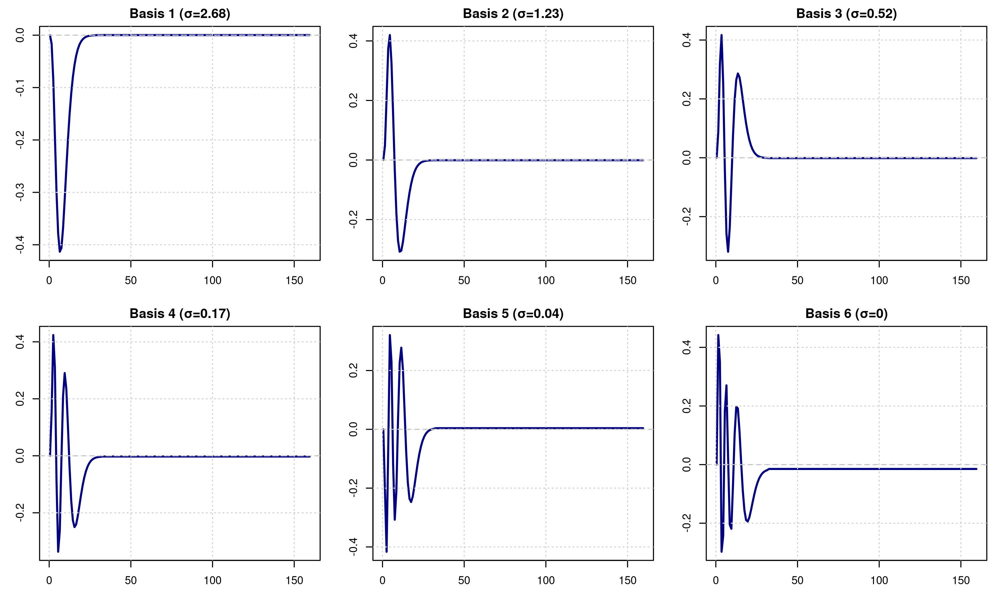
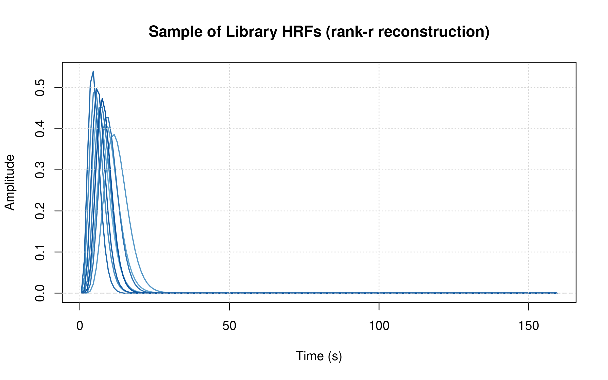
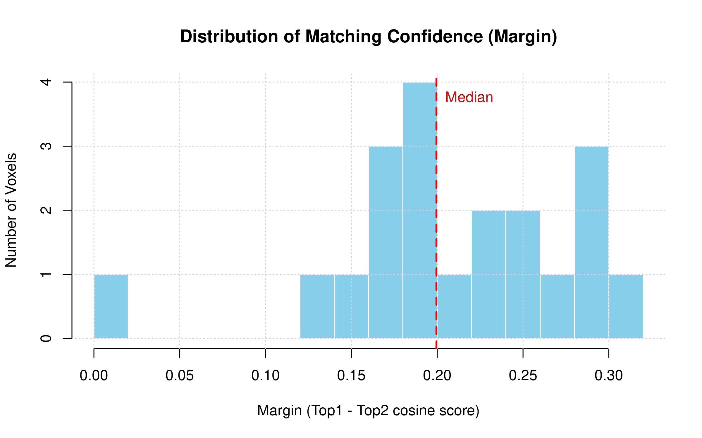
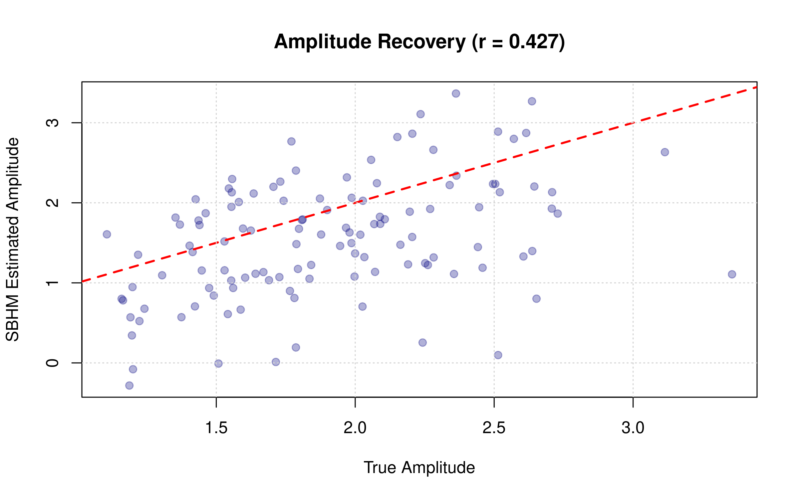
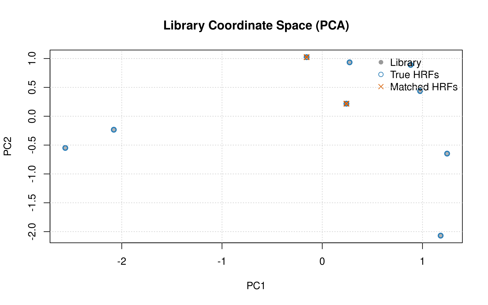
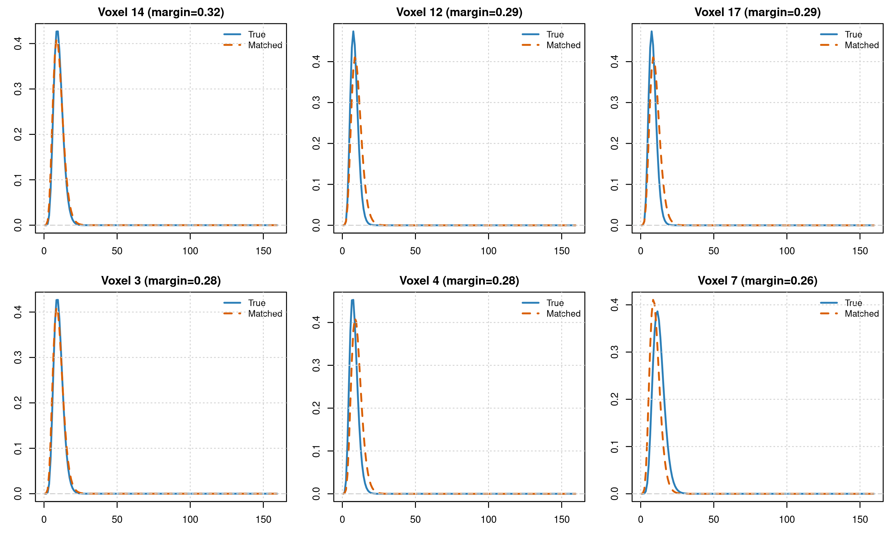

Shared-Basis HRF Matching (SBHM): Efficient Voxel-Specific HRF Estimation
fmrilss Development Team
2025-10-31
sbhm.RmdIntroduction
Shared-Basis HRF Matching (SBHM) provides an efficient middle ground between global HRF selection (one HRF for all voxels) and fully unconstrained voxel-wise HRF estimation. SBHM learns a low-rank shared time basis from a library of candidate HRFs, then matches each voxel to its best-fitting library member in a reduced coefficient space.
The Problem: Voxel-Specific HRFs at Scale
Real fMRI data shows substantial HRF variability across brain regions and individuals. A single canonical HRF (like SPM’s double-gamma) often provides a poor fit to the data. However, estimating completely unconstrained voxel-wise HRFs using FIR bases or multi-basis models is:
- Computationally expensive: Requires fitting many parameters per voxel
- Data hungry: Needs many trials for stable estimates
- High variance: Individual voxel estimates can be noisy without regularization
The SBHM Solution
SBHM addresses these challenges by:
- Learning a shared basis from a library of physiologically plausible HRFs via SVD
- Fitting voxels in the low-dimensional basis space (typically r=4-8 dimensions)
- Matching each voxel to its closest library member using cosine similarity
- Projecting trial-wise coefficients onto matched coordinates for interpretable amplitudes
This approach provides: - Efficiency: Fit only r parameters per voxel (vs. K×trials for FIR) - Stability: Constrain estimates to a learned manifold of plausible HRFs - Interpretability: Each voxel maps to a specific library HRF with known parameters
When to Use SBHM
Use SBHM when: - You expect voxel-specific HRF shapes but want them library-constrained - Your library is large (50-200+ candidate HRFs) covering physiological variability - You want computational efficiency with interpretable per-voxel HRF assignments - You need to compare HRF parameters across voxels or conditions
Use global HRF selection when: - A single shared HRF is sufficient for your analysis - Maximum computational efficiency is critical - Your ROI is anatomically homogeneous
Use unconstrained voxel-wise HRF when: - You need to discover completely novel HRF shapes - You have many trials and can afford the variance - You want data-driven HRF discovery without parametric constraints
Use multi-basis or FIR when: - You need to capture timing/shape variability within single trials - Your experimental design varies trial-to-trial (e.g., parametric modulation)
SBHM Workflow Overview
The SBHM pipeline consists of four main steps, coordinated by the
lss_sbhm() function:
1. sbhm_build() → Learn shared basis B from HRF library via SVD
Returns: B (time basis), S (singular values), A (library coordinates)
2. sbhm_prepass() → Fit aggregate model in basis space per voxel
Returns: beta_bar (r×V coefficients)
3. sbhm_match() → Match voxels to library via cosine similarity
Returns: matched_idx, margin, alpha_hat
4. LSS + Project → Run OASIS with K=r, project to scalar amplitudes
Returns: trial-wise amplitudes (ntrials×V)We’ll walk through each step with examples, then show the end-to-end workflow.
Step 1: Building the Shared Basis
The first step is to create a library of candidate HRFs spanning physiological variability, then learn a low-rank basis via SVD.
Creating an HRF Library
# Define a parameter grid for gamma HRFs
# Shape controls peak time, rate controls width
shapes <- if (fast_mode) seq(6, 10, by = 2) else seq(5, 11, by = 1.5)
rates <- if (fast_mode) seq(0.8, 1.2, by = 0.2) else seq(0.7, 1.3, by = 0.15)
param_grid <- expand.grid(shape = shapes, rate = rates)
cat("Library size:", nrow(param_grid), "HRFs\n")
#> Library size: 9 HRFs
# Function to create gamma HRF with given parameters
gamma_fun <- function(shape, rate) {
# Important: close over parameters so evaluation uses (shape, rate)
f <- function(t) fmrihrf::hrf_gamma(t, shape = shape, rate = rate)
fmrihrf::as_hrf(f, name = sprintf("gamma(s=%.2f,r=%.2f)", shape, rate), span = 32)
}
# Set up time grid
sframe <- sampling_frame(blocklens = n_time, TR = TR)
# Build SBHM with rank r=6
sbhm <- sbhm_build(
library_spec = list(
fun = gamma_fun,
pgrid = param_grid,
span = 32, # HRF duration in seconds
precision = 0.1, # Time resolution for evaluation (0.1s steps)
method = "conv" # Convolution method (vs. "interp")
),
r = 6, # Target rank (number of basis functions)
sframe = sframe,
baseline = c(0, 0.5), # Remove mean in first 0.5s (before response)
normalize = TRUE, # L2 normalize library columns before SVD
shifts = NULL, # Optional: time shifts to augment library (experimental)
ref = "mean" # Reference HRF: "mean" (library average) or "spmg1" (SPM canonical)
)
cat("\nSBHM basis dimensions:\n")
#>
#> SBHM basis dimensions:
cat(" B (time basis):", dim(sbhm$B), "\n")
#> B (time basis): 160 6
cat(" S (singular values):", length(sbhm$S), "\n")
#> S (singular values): 6
cat(" A (library coords):", dim(sbhm$A), "\n")
#> A (library coords): 6 9
# Estimate total library variance via a higher-rank SVD for a more meaningful percent
max_r <- min(12, n_time, nrow(sbhm$A))
sbhm_full <- sbhm_build(
library_spec = list(fun = gamma_fun, pgrid = param_grid, span = 32),
r = max_r,
sframe = sframe,
baseline = c(0, 0.5),
normalize = TRUE
)
cat(" Variance explained by r=6:",
round(100 * sum(sbhm$S^2) / sum(sbhm_full$S^2), 1), "%\n")
#> Variance explained by r=6: 100 %Visualizing the Learned Basis
# Plot the learned time basis functions
par(mfrow = c(2, 3), mar = c(3, 3, 2, 1))
for (i in 1:ncol(sbhm$B)) {
plot(sbhm$tgrid, sbhm$B[, i], type = "l", col = "navy", lwd = 2,
main = paste0("Basis ", i, " (σ=", round(sbhm$S[i], 2), ")"),
xlab = "Time (s)", ylab = "Amplitude")
abline(h = 0, col = "gray", lty = 2)
grid()
}
Understanding the Basis
The basis functions capture the principal modes of variation in the HRF library:
- Basis 1 typically captures the main hemodynamic response shape
- Basis 2-3 capture timing variations (earlier vs. later peaks)
- Basis 4-6 capture width and undershoot variations
The singular values (S) indicate the importance of each basis function. A rapid drop-off suggests redundancy in the library.
Choosing the Rank (r)
# Build SBHM with different ranks to see variance explained
ranks <- ranks_default
var_explained <- numeric(length(ranks))
for (i in seq_along(ranks)) {
sbhm_test <- sbhm_build(
library_spec = list(fun = gamma_fun, pgrid = param_grid, span = 32),
r = ranks[i],
sframe = sframe,
normalize = TRUE
)
var_explained[i] <- sum(sbhm_test$S^2)
}
plot(ranks, var_explained / max(var_explained) * 100,
type = "b", pch = 19, col = "navy", lwd = 2,
xlab = "Rank (r)", ylab = "Variance Explained (%)",
main = "Choosing SBHM Rank")
abline(h = 95, col = "red", lty = 2)
grid()
text(8, 97, "95% threshold", col = "red", pos = 3)Library Coverage Intuition
# Visualize a subset of library shapes reconstructed from B and A
H_hat <- sbhm$B %*% sbhm$A # T×K (rank-r reconstruction)
K <- ncol(H_hat)
sel <- unique(round(seq(1, K, length.out = min(K, 12))))
matplot(sbhm$tgrid, H_hat[, sel, drop = FALSE], type = "l", lty = 1,
col = colorRampPalette(c("#6baed6", "#08519c"))(length(sel)), lwd = 1.5,
xlab = "Time (s)", ylab = "Amplitude",
main = "Sample of Library HRFs (rank-r reconstruction)")
abline(h = 0, col = "gray80", lty = 2)
grid()
Guidelines for choosing r: - Start with r=6 for gamma libraries, r=8-10 for more complex libraries - Aim for 90-95% variance explained - Balance: larger r = better library coverage, but more parameters to fit - Typical range: r=4 (simple) to r=12 (complex)
Understanding the Reference HRF
The ref parameter in sbhm_build()
determines the reference HRF used for: 1. Shrinkage
target in matching (pulls noisy estimates towards reference) 2.
Orientation alignment via orient_ref
(flips coefficients to match reference polarity)
# Option 1: Mean of library (default, data-driven)
sbhm_mean <- sbhm_build(..., ref = "mean")
# Reference = average of all library HRFs
# Option 2: SPM canonical HRF (theory-driven)
sbhm_spm <- sbhm_build(..., ref = "spmg1")
# Reference = SPM's double-gamma canonical HRFWhen to use each: - “mean” (recommended): Let your library define the typical response - “spmg1”: For compatibility with SPM analyses or when library is exploratory
The reference is stored in sbhm$ref$alpha_ref
(r-dimensional coordinates).
Step 2: Generating Synthetic Data with Known HRF Variation
To demonstrate SBHM’s ability to recover voxel-specific HRFs, we’ll create synthetic data where different voxels have different HRF shapes from our library.
# Experimental design
n_voxels <- n_voxels_default
n_trials <- n_trials_default
# Place trial onsets safely within the acquisition window so HRFs are observed
safe_end <- max(sbhm$tgrid) - 30 # leave HRF span margin (~30s)
onsets <- seq(20, safe_end, length.out = n_trials)
# Assign each voxel a random HRF from the library
set.seed(456)
true_hrf_idx <- sample(ncol(sbhm$A), n_voxels, replace = TRUE)
# Generate trial-wise design using SBHM basis
design_spec <- list(
sframe = sframe,
cond = list(onsets = onsets, duration = 0, span = 30)
)
hrf_B <- sbhm_hrf(sbhm$B, sbhm$tgrid, sbhm$span)
rr <- regressor(
onsets = onsets,
hrf = hrf_B,
duration = 0,
span = 30,
summate = FALSE
)
# Build per-trial regressors explicitly (one K-column block per trial)
regressors_by_trial <- vector("list", n_trials)
for (t in 1:n_trials) {
rr_t <- regressor(onsets = onsets[t], hrf = hrf_B, duration = 0, span = 30, summate = FALSE)
X_t <- evaluate(rr_t, grid = sbhm$tgrid, precision = 0.1, method = "conv")
regressors_by_trial[[t]] <- X_t # T×K
}
# Create signal: each voxel uses its assigned HRF's coordinates
Y <- matrix(rnorm(n_time * n_voxels, sd = 0.5), n_time, n_voxels)
true_amplitudes <- matrix(rnorm(n_trials * n_voxels, mean = 2, sd = 0.5),
n_trials, n_voxels)
for (v in 1:n_voxels) {
# Get the true HRF coordinates for this voxel
alpha_true <- sbhm$A[, true_hrf_idx[v]]
# Add signal: X_trials * alpha_true gives the per-trial regressors
# Each trial's amplitude scales this regressor
for (t in 1:n_trials) {
regressor_t <- regressors_by_trial[[t]] %*% alpha_true
Y[, v] <- Y[, v] + true_amplitudes[t, v] * regressor_t
}
}
cat("Data generated:\n")
#> Data generated:
cat(" Y dimensions:", dim(Y), "\n")
#> Y dimensions: 160 20
cat(" True HRF assignments:", length(unique(true_hrf_idx)), "unique HRFs\n")
#> True HRF assignments: 9 unique HRFsStep 3: Running the Complete SBHM Pipeline
Now we’ll use lss_sbhm() to recover the voxel-specific
HRFs and trial amplitudes.
Prewhitening for Autocorrelated Noise
If your fMRI data has temporally correlated noise (common with short TR < 2s), prewhitening improves parameter estimates:
# Example with AR(1) prewhitening via fmriAR
res_prewhiten <- lss_sbhm(
Y = Y, sbhm = sbhm, design_spec = design_spec,
prewhiten = list(method = "ar", p = 1L, pooling = "global", exact_first = "ar1"),
...
)When to use prewhitening: - TR < 2s (high temporal resolution) - Visual inspection shows autocorrelated residuals - Improved model fit is critical (e.g., single-subject studies)
Note: Prewhitening is applied during the prepass
stage. It cannot be combined with data_fac (PCA
factorization).
Basic SBHM Run
# Run end-to-end SBHM (no prewhitening for this synthetic example)
res_sbhm <- lss_sbhm(
Y = Y,
sbhm = sbhm,
design_spec = design_spec,
Nuisance = NULL,
prewhiten = NULL, # Set to list(method="ar", p=1L, exact_first="ar1") for short TR
prepass = list(
ridge = list(mode = "fractional", lambda = 0.01) # Small ridge for stability
),
match = list(
shrink = list(tau = 0, ref = sbhm$ref$alpha_ref),
topK = 1,
whiten = TRUE, # Whiten by singular values before matching
orient_ref = TRUE # Flip coefficient sign if anti-correlated with reference
# Ensures consistent polarity across voxels
),
oasis = list(
ridge_mode = "fractional", # Scale ridge by mean eigenvalue (recommended)
ridge_x = 0.01, # Regularize design matrix (X'X + ridge_x*I) for stability
ridge_b = 0.01 # Shrink coefficients towards zero for variance reduction
),
return = "both" # Return both amplitudes and coefficients
)
cat("SBHM results:\n")
#> SBHM results:
cat(" Amplitude dimensions:", dim(res_sbhm$amplitude), "\n")
#> Amplitude dimensions: 6 20
cat(" Coefficients dimensions:", dim(res_sbhm$coeffs_r), "\n")
#> Coefficients dimensions: 6 6 20
cat(" Matched HRF indices:", length(res_sbhm$matched_idx), "\n")
#> Matched HRF indices: 20Step 4: Evaluating HRF Recovery
Let’s assess how well SBHM recovered the true HRF assignments.
# Check matching accuracy
matched_idx <- res_sbhm$matched_idx
accuracy <- mean(matched_idx == true_hrf_idx)
cat("HRF Matching Accuracy:", round(100 * accuracy, 1), "%\n")
#> HRF Matching Accuracy: 15 %
cat("Confused voxels:", sum(matched_idx != true_hrf_idx), "/", n_voxels, "\n\n")
#> Confused voxels: 17 / 20
# Analyze matching confidence via margin (top1 - top2 score)
cat("Matching confidence (margin):\n")
#> Matching confidence (margin):
cat(" Mean:", round(mean(res_sbhm$margin), 3), "\n")
#> Mean: 0.21
cat(" Median:", round(median(res_sbhm$margin), 3), "\n")
#> Median: 0.2
cat(" Range:", round(range(res_sbhm$margin), 3), "\n")
#> Range: 0.002 0.317
# Low margin indicates ambiguity
low_confidence <- which(res_sbhm$margin < median(res_sbhm$margin))
cat(" Low-confidence voxels (<median):", length(low_confidence), "\n")
#> Low-confidence voxels (<median): 10Visualizing Matching Confidence
hist(res_sbhm$margin, breaks = 20, col = "skyblue", border = "white",
main = "Distribution of Matching Confidence (Margin)",
xlab = "Margin (Top1 - Top2 cosine score)",
ylab = "Number of Voxels")
abline(v = median(res_sbhm$margin), col = "red", lwd = 2, lty = 2)
text(median(res_sbhm$margin), par("usr")[4] * 0.9,
"Median", pos = 4, col = "red")
grid()
Interpreting margin: - High margin (>0.1): Clear winner, high confidence - Medium margin (0.05-0.1): Moderate confidence, top 2 candidates similar - Low margin (<0.05): Ambiguous, consider averaging top-K candidates
Note on top-K: lss_sbhm() uses hard assignment (top-1)
internally. For soft assignment, call sbhm_prepass() and
sbhm_match(topK = K) directly to obtain
weights and topK_idx, then combine candidate
coordinates manually before projecting via
sbhm_project().
Comparing Recovered vs. True Amplitudes
# Correlation between estimated and true amplitudes
cor_amp <- cor(as.vector(res_sbhm$amplitude), as.vector(true_amplitudes))
plot(as.vector(true_amplitudes), as.vector(res_sbhm$amplitude),
pch = 19, col = adjustcolor("navy", alpha.f = 0.3),
xlab = "True Amplitude", ylab = "SBHM Estimated Amplitude",
main = paste0("Amplitude Recovery (r = ", round(cor_amp, 3), ")"))
abline(0, 1, col = "red", lwd = 2, lty = 2)
grid()
Library Manifold and Matches
# PCA of library coordinates (columns of A), overlay matched HRFs
A_t <- t(sbhm$A) # K×r
pca <- prcomp(A_t, center = TRUE, scale. = TRUE)
pc <- pca$x[, 1:2, drop = FALSE]
plot(pc, pch = 16, col = "gray70",
xlab = "PC1", ylab = "PC2",
main = "Library Coordinate Space (PCA)")
# Highlight true and matched HRFs
points(pc[unique(true_hrf_idx), , drop = FALSE], pch = 1, col = "#2c7fb8", lwd = 2)
points(pc[unique(res_sbhm$matched_idx), , drop = FALSE], pch = 4, col = "#d95f02", lwd = 2)
legend("topright", bty = "n",
legend = c("Library", "True HRFs", "Matched HRFs"),
pch = c(16, 1, 4), col = c("gray60", "#2c7fb8", "#d95f02"))
grid()
Matched vs. True HRF Shapes
# Compare matched HRF shapes to true HRFs for a few voxels
H_hat <- sbhm$B %*% sbhm$A
vox_show <- head(order(-res_sbhm$margin), n = min(6, n_voxels)) # confident voxels
par(mfrow = c(2, 3), mar = c(3, 3, 2, 1))
for (v in vox_show) {
h_true <- H_hat[, true_hrf_idx[v]]
h_match <- H_hat[, res_sbhm$matched_idx[v]]
rng <- range(c(h_true, h_match))
plot(sbhm$tgrid, h_true, type = "l", col = "#2c7fb8", lwd = 2,
main = paste0("Voxel ", v, " (margin=", round(res_sbhm$margin[v], 2), ")"),
xlab = "Time (s)", ylab = "HRF", ylim = rng)
lines(sbhm$tgrid, h_match, col = "#d95f02", lwd = 2, lty = 2)
abline(h = 0, col = "gray80", lty = 2)
legend("topright", bty = "n", cex = 0.9,
legend = c("True", "Matched"), lty = c(1, 2), lwd = 2,
col = c("#2c7fb8", "#d95f02"))
grid()
}
Understanding SBHM Parameters
Parameter Quick Reference
This table summarizes all SBHM parameters with recommended starting values:
| Parameter | Default | Recommended Range | When to Adjust |
|---|---|---|---|
| r (rank) | — | 6 (simple) to 12 (complex) | Aim for 90-95% variance explained |
| topK (matching) | 1 | 1 (hard) to 5 (soft) | Use 3-5 for ambiguous cases |
| ridge.lambda (prepass) | 0.01 | 0.005 to 0.05 | Add 0.01-0.05 for noisy data |
| ridge.mode | “fractional” | “fractional” or “absolute” | Fractional scales by design energy |
| shrink.tau (matching) | 0 | 0 to 0.2 | Increase for low SNR (0.1-0.2) |
| whiten | TRUE | TRUE (recommended) | Set FALSE to weight by singular values |
| orient_ref | TRUE | TRUE (recommended) | Ensures consistent coefficient polarity |
| ridge_x (OASIS design) | 0 | 0.01 to 0.05 | Increase if design ill-conditioned |
| ridge_b (OASIS coeffs) | 0 | 0.01 to 0.05 | Increase for variance reduction |
| prewhiten | NULL | NULL or list(method=“ar”, p=1L) | Use for TR < 2s or autocorrelated noise |
| data_fac | NULL | NULL or PCA factorization | Use for V > 50,000 voxels |
Minimal call (uses all defaults except required arguments):
res <- lss_sbhm(Y = Y, sbhm = sbhm, design_spec = design_spec)
# Uses: small fractional ridge (0.01), topK=1, whiten=TRUE, orient_ref=TRUE, no prewhiteningPrepass Ridge Regularization
The prepass fits aggregate coefficients per voxel. Ridge helps with: - Collinear basis functions (if library has redundancy) - Low SNR data - Preventing extreme coefficients
# Example: varying ridge strength
prepass = list(
ridge = list(
mode = "fractional", # Scale by design energy
lambda = 0.01, # 1% of mean eigenvalue
alpha_ref = sbhm$ref$alpha_ref # Shrink towards reference
)
)Guidelines: - Start with lambda = 0.01
(small fractional ridge) - Increase to 0.02–0.05 if
unstable or low SNR - Use mode = "fractional" for automatic
scaling by design energy
Matching Shrinkage
Shrinkage pulls noisy voxel estimates towards a reference before matching, reducing the influence of noise on HRF assignment.
match = list(
shrink = list(
tau = 0.1, # Shrinkage strength (0 = none, 1 = full shrinkage to ref)
ref = sbhm$ref$alpha_ref, # Shrinkage target (library mean by default)
snr = NULL # Optional: per-voxel SNR for adaptive shrinkage
)
)When to use: - Low SNR data:
tau = 0.1-0.2 (stronger shrinkage) - High SNR data:
tau = 0 (no shrinkage) - Adaptive shrinkage: provide
per-voxel SNR estimates
Adaptive Shrinkage with SNR
For heterogeneous SNR across voxels, adaptive shrinkage adjusts
tau per voxel:
# Compute per-voxel SNR from prepass (higher SNR = less shrinkage)
# Simple proxy: ratio of aggregate fit variance to residual variance
prepass_result <- sbhm_prepass(Y, sbhm, design_spec)
# Proxy SNR: variance explained by aggregate fit vs. residual variance
fit <- prepass_result$A_agg %*% prepass_result$beta_bar # in residualized space
signal_var <- apply(fit, 2, stats::var)
total_var <- apply(Y, 2, stats::var)
residual_var <- pmax(total_var - signal_var, .Machine$double.eps)
snr_voxel <- pmax(signal_var, .Machine$double.eps) / residual_var
match = list(
shrink = list(
tau = NULL, # NULL triggers adaptive mode
ref = sbhm$ref$alpha_ref,
snr = snr_voxel # Higher SNR voxels get less shrinkage
)
)Adaptive formula: For voxel v, effective
tau = base_tau / (1 + snr[v]), where base_tau
is calibrated internally.
Whitening
Whitening divides coefficients by singular values before matching, equalizing the importance of all basis directions.
match = list(
whiten = TRUE # Recommended: divides by S before L2 normalization
)Effect: Without whitening, the first basis (largest S) dominates matching. With whitening, all r dimensions contribute equally to the cosine score.
Advanced Use Cases
Working with Top-K Matches
Instead of hard assignment to the single best HRF, you can get the top-K candidates with weights.
# Demonstrate top-K matching directly via sbhm_prepass + sbhm_match
pre_small <- sbhm_prepass(
Y = Y[, 1:10], # Subset for speed
sbhm = sbhm,
design_spec = design_spec
)
m_top3 <- sbhm_match(
beta_bar = pre_small$beta_bar,
S = sbhm$S,
A = sbhm$A,
topK = 3,
whiten = TRUE
)
cat("Top-3 matching (subset):\n")
#> Top-3 matching (subset):
cat(" Top indices dims:", dim(m_top3$topK_idx), "\n")
#> Top indices dims: 3 10
cat(" Weights dims:", dim(m_top3$weights), "\n")
#> Weights dims: 3 10
# Examine one voxel's top-3 matches
v <- 1
cat("\nVoxel", v, "top-3:\n")
#>
#> Voxel 1 top-3:
for (k in 1:3) {
cat(" Rank", k, ": HRF", m_top3$topK_idx[k, v],
"(weight =", round(m_top3$weights[k, v], 3), ")\n")
}
#> Rank 1 : HRF 2 (weight = 0.373 )
#> Rank 2 : HRF 5 (weight = 0.321 )
#> Rank 3 : HRF 8 (weight = 0.307 )Soft Assignment End-to-End
Hard assignment uses only the top-1 HRF per voxel. Soft assignment blends the top-K candidates using their softmax weights, then projects trial-wise coefficients onto this blended coordinate to produce amplitudes. This can reduce variance for ambiguous voxels (small margin) at the cost of some bias.
Conceptually: - Prepass: estimate per-voxel basis coefficients
beta_bar. - Match: compute cosine scores in whitened,
L2-normalized space; convert top-K scores into softmax weights
(temperature = 1) per voxel. - Blend: compute weighted average of the
unwhitened library coordinates A[:, idx] using those weights to form
alpha_soft (r×V). - LSS: obtain trial-wise r-dimensional
coefficients (K=r) with OASIS. - Project: amplitudes = inner product of
trial-wise coefficients with alpha_soft.
# 1) Prepass on all voxels
pre_all <- sbhm_prepass(Y = Y, sbhm = sbhm, design_spec = design_spec)
# 2) Top-K matching with softmax weights
topK <- 3
m_soft <- sbhm_match(
beta_bar = pre_all$beta_bar,
S = sbhm$S,
A = sbhm$A,
topK = topK,
whiten = TRUE,
orient_ref = TRUE
)
# 3) Build blended coordinates alpha_soft (r×V)
V <- ncol(Y)
r <- nrow(pre_all$beta_bar)
alpha_soft <- matrix(0, nrow = r, ncol = V)
for (v in seq_len(V)) {
idx <- m_soft$topK_idx[, v]
w <- m_soft$weights[, v]
# Weighted combination in unwhitened coordinate space
alpha_soft[, v] <- as.numeric(sbhm$A[, idx, drop = FALSE] %*% w)
}
# 4) Trial-wise coefficients with OASIS (K=r)
hrf_B <- sbhm_hrf(sbhm$B, sbhm$tgrid, sbhm$span)
spec <- design_spec; spec$cond$hrf <- hrf_B
BetaMat <- lss(
Y = Y, X = NULL, Z = NULL, Nuisance = NULL,
method = "oasis",
oasis = list(design_spec = spec, K = r),
prewhiten = NULL
)
stopifnot(nrow(BetaMat) %% r == 0)
ntrials <- nrow(BetaMat) / r
beta_rt <- array(BetaMat, dim = c(r, ntrials, V))
# 5) Soft-assignment amplitudes
amps_soft <- sbhm_project(beta_rt, alpha_soft)
cat("Soft-assignment amplitudes dims:", dim(amps_soft), "\n")
#> Soft-assignment amplitudes dims: 6 20
# Optional: compare against hard-assignment amplitudes from lss_sbhm()
res_hard <- lss_sbhm(Y, sbhm, design_spec, return = "amplitude",
prepass = list(ridge = list(mode = "fractional", lambda = 0.01)))
cor_soft_hard <- cor(as.vector(amps_soft), as.vector(res_hard$amplitude))
cat("Correlation (soft vs hard amplitudes):", round(cor_soft_hard, 3), "\n")
#> Correlation (soft vs hard amplitudes): 0.912
# Focus on ambiguous voxels (low margin) where soft can help
ambig <- which(res_hard$margin < median(res_hard$margin))
if (length(ambig) >= 3) {
cat("Ambiguous voxels (n):", length(ambig), "\n")
}
#> Ambiguous voxels (n): 10Built-in Soft Assignment (Convenience)
For convenience, lss_sbhm() can also perform soft
blending internally to avoid manual steps. Set
match = list(topK = 3, soft_blend = TRUE) and optionally a
blend_margin to only blend ambiguous voxels.
res_soft <- lss_sbhm(
Y = Y,
sbhm = sbhm,
design_spec = design_spec,
prepass = list(ridge = list(mode = "fractional", lambda = 0.01)),
match = list(topK = 3, soft_blend = TRUE, blend_margin = median(res_hard$margin)),
return = "amplitude"
)
cor_built <- cor(as.vector(res_soft$amplitude), as.vector(res_hard$amplitude))
cat("Correlation (built-in soft vs hard):", round(cor_built, 3), "\n")
#> Correlation (built-in soft vs hard): 0.96Best practices for soft assignment: - Use when margin is
small (ambiguous matches). Consider blending only for voxels with
margin < threshold and keep hard assignment otherwise. -
The weights are a softmax over cosine scores (temperature = 1). To
sharpen or smooth, you can post-process scores with a custom temperature
before exponentiation. - Blending trades interpretability (single HRF
per voxel) for stability. Report both the matched index and whether soft
blending was applied.
Returning Coefficients for Custom Analysis
# Get trial-wise coefficients in basis space
res_coeffs <- lss_sbhm(
Y = Y[, 1:5],
sbhm = sbhm,
design_spec = design_spec,
return = "coefficients" # Don't project to amplitudes
)
cat("Coefficient array dimensions:", dim(res_coeffs$coeffs_r), "\n")
#> Coefficient array dimensions: 6 6 5
cat(" [1] = basis dimension (r)\n")
#> [1] = basis dimension (r)
cat(" [2] = number of trials\n")
#> [2] = number of trials
cat(" [3] = number of voxels\n")
#> [3] = number of voxels
# You can now do custom projections or analyses in coefficient spacePerformance Considerations
Computational Cost
SBHM cost scales as: - Build: O(T²·K) for library SVD (one-time) - Prepass: O(T²·r + T·r·V) per voxel aggregate fit - Match: O(r·K·V) for cosine scores - LSS: O(T·r·N·V) for N trials, r-dimensional design
Compared to alternatives: - vs. Global grid search: ~2-3x slower (r fits vs. 1 fit per candidate) - vs. Voxel-wise FIR: ~10-50x faster (r parameters vs. K·N parameters) - vs. Unconstrained per-voxel: ~5-20x faster
Memory Usage
Peak memory scales with: - Data: T·V (input fMRI data) - Design: T·r·N (trial-wise basis design) - Coefficients: r·N·V (trial-wise basis coefficients)
For T=300, V=100k, r=6, N=100: ~2GB for coefficients.
Optimization Tips
1. Data Factorization for Whole-Brain Analysis
For very large datasets (V > 50,000 voxels), use PCA factorization to reduce memory and computation:
# Compute PCA decomposition: Y ≈ scores × loadings'
pca <- prcomp(Y, center = TRUE, rank. = 100) # Keep q=100 components
Y_pca <- list(
scores = pca$x, # T×q (time × components)
loadings = pca$rotation # q×V (components × voxels)
)
# Run SBHM on factored data (fits q "meta-voxels" instead of V voxels)
res_sbhm <- lss_sbhm(
Y = Y_pca$scores, # Pass scores as Y
sbhm = sbhm,
design_spec = design_spec,
prepass = list(
data_fac = list(
scores = Y_pca$scores, # T×q
loadings = Y_pca$loadings # q×V (transposed internally)
)
)
)Trade-offs: - Speedup: ~V/q times
faster prepass (e.g., 100x for V=100k, q=100) -
Accuracy: Loses information in discarded components
(minor for q=100-200) - Limitation: Cannot use with
prewhiten (incompatible operations)
When to use: V > 50,000 and memory is limited, or when prepass is the bottleneck.
2. Process in ROI Chunks
# For targeted analyses, process specific brain regions
roi_mask <- my_roi_definition # Logical vector
Y_roi <- Y[, roi_mask]
res_roi <- lss_sbhm(Y_roi, sbhm, design_spec)4. Library Augmentation with Time Shifts (Experimental)
The shifts parameter augments the library by
time-shifting each HRF:
# Add shifted versions of each HRF (e.g., ±1s shifts)
sbhm_shifted <- sbhm_build(
library_spec = list(fun = gamma_fun, pgrid = param_grid, span = 32),
r = 8, # May need higher rank for shifted library
sframe = sframe,
shifts = c(-1, 0, 1), # Create 3 versions: 1s early, on-time, 1s late
normalize = TRUE
)
# Library size increases by length(shifts) factor (K → K×3)Use cases: - Uncertain event timing (e.g., subject-paced tasks) - Modeling temporal jitter in HRF onset - Exploratory analyses
Caution: Increases library size (computational cost) and risk of overfitting.
Comparison with Other Approaches
SBHM vs. Global HRF Selection
| Aspect | SBHM | Global Selection |
|---|---|---|
| Per-voxel HRFs | ✓ Yes | ✗ Single shared HRF |
| Computation | Moderate | Fast |
| Interpretability | High (library params) | High (single model) |
| Flexibility | Library-constrained | Fully constrained |
| Best for | Heterogeneous regions | Homogeneous ROIs |
SBHM vs. Unconstrained Voxel-Wise
| Aspect | SBHM | Unconstrained |
|---|---|---|
| Parameters/voxel | r (4-8) | K·N (50-500+) |
| Stability | High (regularized) | Lower (needs many trials) |
| Interpretability | High (library mapping) | Lower (arbitrary shapes) |
| Flexibility | Library-constrained | Fully flexible |
| Best for | Known HRF variability | Novel HRF discovery |
Troubleshooting
Low Matching Accuracy
Symptoms: Many voxels assigned incorrect HRFs, low correlation with ground truth
Possible causes: 1. Library doesn’t cover the true HRF shapes 2. Low SNR making coefficient estimates noisy 3. Insufficient trials for stable prepass fit
Solutions: - Expand library to cover more parameter
space - Increase shrinkage: tau = 0.1-0.2 - Add ridge
regularization to prepass - Increase number of trials in experiment
High Variance in Amplitudes
Symptoms: Amplitudes have high trial-to-trial variability, low test-retest reliability
Possible causes: 1. Matched HRF is wrong (using wrong projection) 2. Low SNR in data 3. Insufficient ridge in OASIS step
Solutions: - Check matching confidence via
margin - Increase OASIS ridge:
ridge_x = 0.05-0.1 - Use top-K averaging instead of hard
assignment
Slow Computation
Symptoms: SBHM takes much longer than expected
Possible causes: 1. Very large library (K > 200) 2. High rank (r > 12) with many voxels 3. Dense event designs with many trials
Solutions: - Reduce library size via clustering in parameter space - Lower rank: start with r=6 - Process ROIs separately instead of whole-brain
References
- Mumford et al. (2012). “Deconvolving BOLD activation in event-related designs for multivoxel pattern classification analyses.” NeuroImage.
- Lindquist et al. (2009). “Modeling the hemodynamic response function in fMRI.” NeuroImage.
- Friston et al. (1998). “Event-related fMRI: Characterizing differential responses.” NeuroImage.
Summary
SBHM provides an efficient, interpretable approach to voxel-specific HRF estimation by:
- Learning a shared basis from a physiologically plausible library
- Matching voxels to library members via cosine similarity in coefficient space
- Estimating trial-wise activations with per-voxel HRF shapes
Key advantages: - Computational efficiency (fit r parameters per voxel, not K·N) - Built-in regularization via library constraint - Interpretable HRF assignments with confidence scores - Integrates seamlessly with OASIS LSS framework
Next steps: - See ?sbhm_build for
library construction details - See ?lss_sbhm for full
parameter documentation - See the “Voxel-wise HRF” vignette for
unconstrained alternatives - See the “OASIS Method” vignette for related
approaches